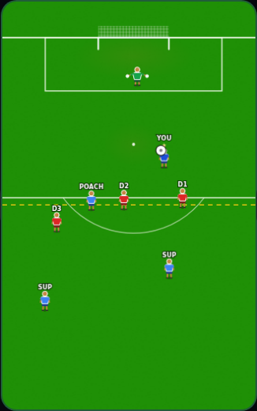
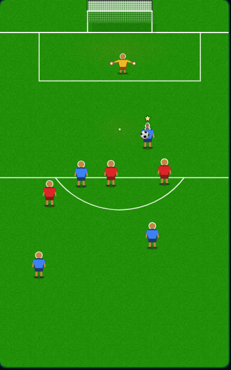
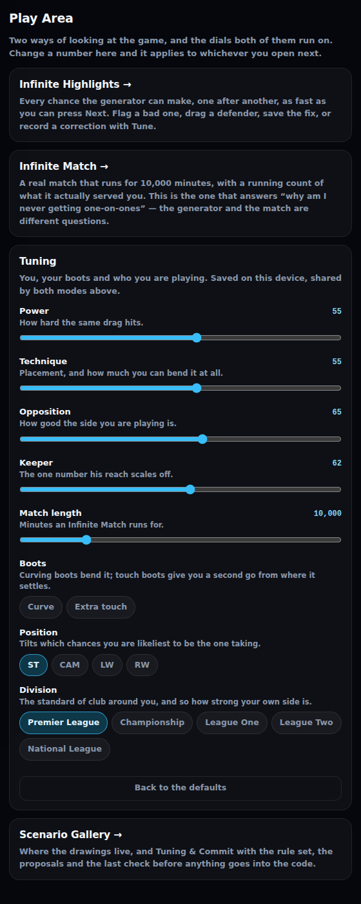
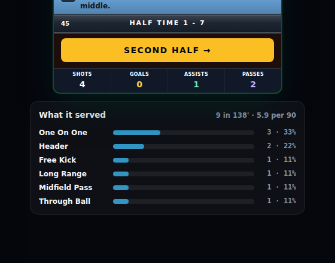
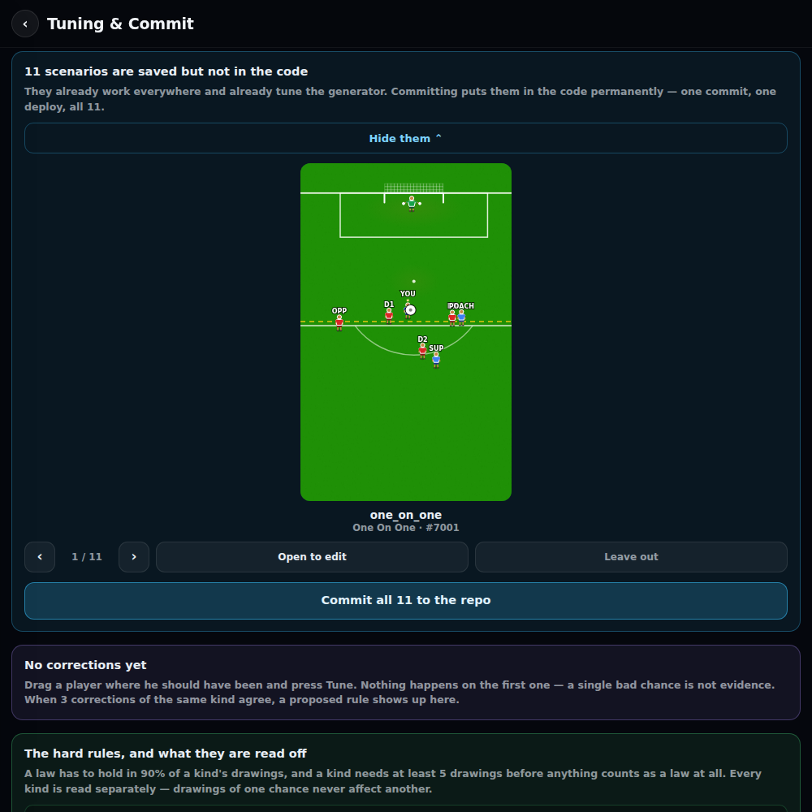

The Play button was throwing your drawing away · a new Play Area with an Infinite Match that counts what it actually serves you · and you can finally look at scenarios before committing them
2.4mthe goalie was out by every time you pressed Play
138′minutes played in one go, where a match used to stop at 90
0 of 11saved scenarios that are actually in the code
155test files green
Fixed
Play in the scenario gallery was throwing your saved drawing away
It played the raw generated chance instead. Reported directly: “the play in the scenario gallery moves everything around, and the goalie isn't in the same position that I place him in.”
Goalie off line
4.6m 2.2m
Ball from goal
11.6m 19.2m
What it was doing, and the answer to “is the game wrong too?”
Every other part of a card stacks TWO layers: the drawing you saved, then whatever you are dragging right now. The picture does it, the fault rings do it, the formation strip does it. Play was the one thing that only applied the second one — so it quietly ignored the whole scenario you had saved.
The numbers above are the real card it was reported from: your drawing had the goalie 4.6m off his line and the ball 11.6m out; Play put them on 2.2m and 19.2m. That is the goalie 2.4m out of place and the ball 7.6m too deep, on every single press.
THE GAME WAS NEVER WRONG. In a real match it picks one of your saved scenarios and uses it. The goalie specifically is rebuilt from two things your drawing holds — how far he shades the near post, and how far off his line he comes — both measured against where the ball is. Drawn exactly as you left him when nothing moves, and he follows the ball when the variant nudges it. So a goalie you draw rushing out still rushes out.
SO: place him where he should be in the drawing. That is what the game uses.

What you drew. Goalie out at the edge of the six-yard box.

Press Play now and it is the same picture. Before this, it was not.
The desktop picture was too big to see the buttons under it
Third pass at this size. 340 was too small, 520×800 was “too big”, 400×640 still pushed the buttons off the bottom. It is 325×520 now.
What fits now
On a 900-pixel-tall window the whole card is on screen at once — picture, edit row, the Saved/Committed pills, the verdict row, Simulate and Across formations.
On an 800-pixel window the last strip is still about 80 pixels below the fold. Say the word and it goes smaller again — but any smaller and the picture starts being hard to judge, which is the thing it is for.
A chance nobody had touched was labelled “Draft — this browser only”
In Infinite Highlights. A chance the generator just rolled is not a draft of anything; it now reads “Straight from the generator”.
Added
A Play Area — both play tools behind one door, with the dials on top
Power, technique, curving boots, extra-touch boots, opposition, goalie, position, division and match length. One set, shared by both modes.
Why the dials are shared rather than one set per screen
A number set here means the same thing in whichever mode you open next. Two copies would mean turning the power up in the match and wondering why a highlight still felt identical.
None of these are new mechanics. Every one of them was already a real setting the game runs on — they were just fixed at whatever a dev page happened to have typed into it, and could not be changed without a code change.
Saved on your own device. Nothing here is part of a career and nothing here reaches the live game.

The two modes and the dials under them. Every number here was already a real setting; it just could not be changed.
The Infinite Match — a real match that does not stop, counting what it serves you
Asked for twice, and the reason was “I've played like 5 games and seen ZERO of these one on ones.” That sentence could not be checked against anything until now.
Match minutes
138 75
What it measured, live, in a real browser
9 chances over 138 minutes — 5.9 per 90 — across six different kinds: one-on-one 3, header 2, then a free kick, a long range, a midfield pass and a through ball.
It is the REAL match, not a copy of one. The same match a career plays, against a real career, so anything it shows you is genuinely what the game does.
It needed two things the game did not have. One: a way to be told which chance was served — there was none, the match decided it internally and never said, which is exactly why “zero one-on-ones in five games” had nothing to check against. Two: a way to stop the manager taking you off, which can happen from minute 60. Measured: a 10,000-minute match was ending around minute 75.
Both are off unless this tool asks for them, so a real career behaves exactly as it did.
Infinite Highlights answers a DIFFERENT question, and both are worth having: it shows what the generator can produce, this shows what a match actually hands you. A match picks an area of the pitch first and the chance second, so the two are not the same list.

The bottom panel. One real match, still going at 138 minutes.
You can look through scenarios before committing them
Reported directly: “not being able to see them before committing is annoying.” It was a line of ids, and an id is not a picture.
How the last check works
“Look through all 11 first” in Tuning & Commit: one scenario at a time, the real drawing, drawn by the same thing its own card draws with.
Back and forward through the whole batch, “Open to edit” if one needs a last drag, and “Leave out” to drop one from this commit without deleting it.
The button then reads “Commit 10 of 11 to the repo”, so what you are about to do is never a guess.
Looking writes nothing. Leaving one out changes only this batch.

One at a time, with the real drawing. “Leave out” drops it from this commit only.
Infinite Highlights got Tune, Delete and the Saved/Committed pills
The screen you actually flick through chances on was the one screen that could not record a correction from one.
The three that were missing
TUNE — drag a player where he should have been and record what was wrong, without saving it as a drawing. Same store, same threshold as everywhere else, so a correction made here counts exactly as much as one made in the gallery.
DELETE — database AND code, with the “Are you sure?” asked for on the call. It only had Revert before, which clears the database and leaves a committed copy still being served.
THE PILLS — whether this one is saved, committed, or only in your browser, and whether it is feeding the auto-tuner. You could save a fix here and have no idea which.
Changed
Every position now pulls chances toward itself
A striker lives in the box, the ten finds the through ball and the shot from range, the wingers get the byline and the dribble.
ST one-on-ones
21.7% 13.4%
LW byline cross
9.7% 2.2%
ST build-ups
5.8% 10.6%
The whole table, and the thing that nearly went unnoticed
Striker: one-on-one 21.7%, through ball 15.6%, header 10.9%.
Attacking mid: through ball 19.7%, one-on-one 13.4%, long range 11.6%.
Chances per match stay level across all four — 6.1 to 6.6 — so no position is starved of the ball to give another one more.
One thing only showed up by measuring: adding the pull first made striker build-ups go UP, not down. Fewer involvements meant more time starved of the ball, and the rule that rescues a starved player was dragging him back into his own half to find it. Gating that rule by the same pull fixed it.
Simulate is a small square with a play triangle, and Across formations moved underneath
Asked for directly. The desktop right-hand column is gone — one centred column now, same order as the phone, so there is one layout rather than two.
Known issues
The five-a-side froze mid-game
Reported on WhatsApp while starting a new save. Not reproduced yet and not on any idea list — this is a live bug, not a polish item, and it needs chasing on its own.
Nothing is actually in the code yet — 11 saved, 0 committed one press away
Every scenario made so far lives in the database only. They work everywhere and they do tune the generator, but nothing survives the database. The new review screen exists to make that one press.
The Infinite Match showed 1-7 at half time unconfirmed
With a test driver that missed 36 of its 45 attempts, so it may be nothing. Worth a real look when someone plays it properly — surfacing exactly this is what the tool is for.
Half time still happens at minute 45 in a 10,000-minute match
The banner and the “Second Half” button fire once and then the match carries on. Cosmetic, left alone.
One number was changed in the file Mikey said never to touch Mikey's call
A striker's long-range weighting, 6 to 3, in the match engine's chance table. It is a single row of data and reversible in one character — flagged rather than done quietly.
Mikey's branch will clash with this one in a single place
His energy work multiplies the same line the position pull was added to. They compose fine; the two edits just sit on top of each other and will need merging by hand once.
Next — the trial, after scenarios
Stop calling it a trial. It is the game, and you are a free agent.
“If I visited the game and started a save I don't think I would complete the trial.” Agreed on WhatsApp, not started.
The shape agreed
Open in a Sunday league match. A short tutorial of a few highlights, PLAYED, not explained.
A scout spots you. You have a conversation with him. Skip a few days in the menu, then go to the scouting session.
The session is scenarios — and it should use the live attacks already built for some of them: volleys off a cross, headers, one-twos.
NO score per drill and no screens in between. One scouting assessment at the end, the way a real trial ends.
The feel: Alex Hunter. Your guy walks in, talks to the scout, an animation to start, the scout egging you on, in a real non-league stadium.
“It needs to feel quick and still entertaining while giving you a feel of the real game.” Higgsfield for the cutscenes and animations.
A random crazy injury animation
Your guy gets clattered in 3D, out for six months, loses stats. From the same conversation.
Previous versions
v0.3.5 — from the 40-minute call
Delete made to work on any scenario rather than looking one-on-one-only, the X relabelled “No good”, and everything decided or raised on the call written down: the sprint to something releasable, ownership staying while the son mechanic goes elsewhere, and fourteen parked ideas.
v0.3 — the scenario gallery, Save vs Commit, and the auto-tuner
Commits go to main and batch into one deploy, every card says whether it is saved or committed, Tune records a correction without saving it as a base scenario, and the rule set is read off your own drawings.